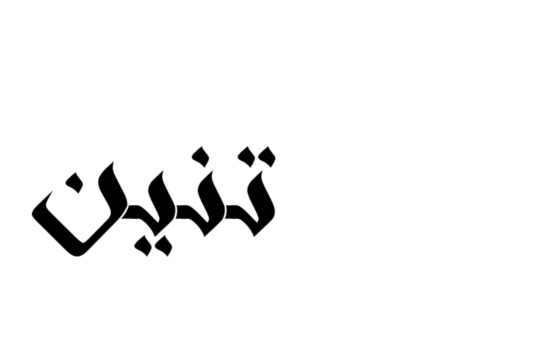

out بره
in جوه
who مين
out بره
in جوه
who مين
Tahrir, 2014
Cairo with Ammar abu Bakr, 2013
Italy with Aya Tarek, 2013
2012
2012
2012
Horreya Bar, 2012
2012
2011
2011
Tahrir, 2011
© El Teneen, 2015.
© El Teneen, 2015.